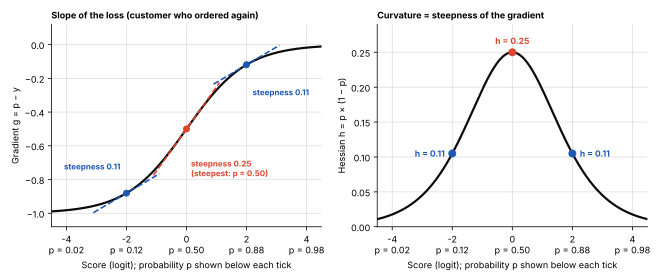
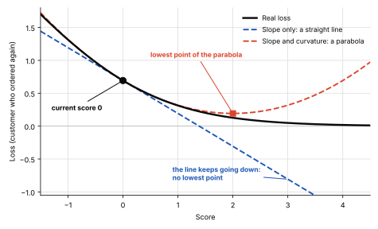
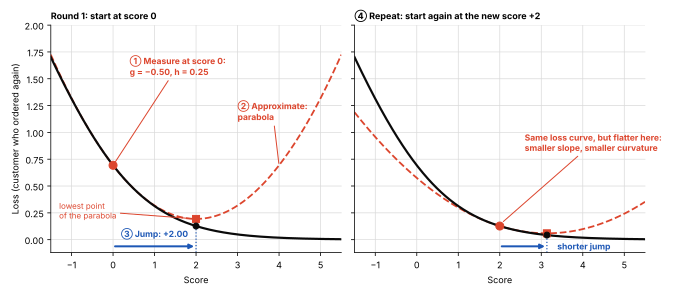

Tree-based models
XGBoost: Gradient Boosting That Knows How Far to Step
XGBoost takes the idea of gradient boosting further. It uses both first- and second-order derivatives of the loss function to determine how trees should be built and where splits provide the greatest improvement. It also introduces regularization to control model complexity and reduce overfitting.
This article explains both ideas in plain words, using the same eight customers and the same question as in Gradient Boosting: How Each Tree Fixes the Errors Before It: will a first-time customer order again? Every formula comes with a short explanation of why it exists, and each one is checked on the eight customers.
In this article
- What XGBoost Changes: Two Numbers and a Price
- Slope and Curvature: How XGBoost Finds the Right Step
- The XGBoost Objective: Loss Plus a Penalty
- Leaf Weights and Split Gain
- What Is Different from the Residual Recipe?
- Does the Mathematics Pay Off? Testing XGBoost on 5,000 Customers
- XGBoost in Python
- Stakeholders: How to Explain XGBoost Without the Mathematics
What XGBoost Changes: Two Numbers and a Price
XGBoost builds the same kind of model as Gradient Boosting: small trees added one after another, each one correcting the errors before it, on the score scale explained there. What changes is how each tree is chosen and what the model is penalized for. Three things change:
- Curvature: XGBoost looks at the curvature of the loss as well as its slope, so it knows how far to step and not only in which direction.
- A price: it adds a price for extra leaves and for large corrections, so a tree only grows when a split is worth it.
- One score: a single score decides which question a tree asks and which value each leaf gets.
There is a lot of engineering on top, such as fast split search, handling of missing values and parallel computing. We leave that out and look only at the mathematics that changes the result.
Slope and Curvature: How XGBoost Finds the Right Step
Each new tree in Gradient Boosting corrects the predictions of the trees before it. Knowing the direction of a correction is only half the problem: we also need to know how large it should be. XGBoost uses two quantities for this, the gradient (the direction) and the Hessian (the curvature). We follow one customer.
Gradient: Which Direction Should We Move?
The gradient is the slope of the loss at the current prediction. For the log loss it is:
g = p − y
Here, p is the predicted probability and y the actual outcome (0 or 1). A customer who ordered again (y = 1) with a predicted probability of 0.50 has:
g = 0.50 − 1 = −0.50
The negative gradient says the prediction is too low, so the score must rise. A customer who did not order again (y = 0) has g = 0.50 − 0 = +0.50: the prediction is too high, so the score must fall. The gradient gives the direction, not the distance.
Gradient and residual
The residual is the error of a prediction: what really happened minus the predicted probability, y − p. The gradient is the slope of the loss, p − y. For the log loss, the gradient is the residual with the opposite sign. The model moves against the gradient, which is the same as moving along the residual.
The gradient works for any loss function, not only the log loss. That is why XGBoost uses it.
Hessian: How Quickly Does the Slope Change?
The Hessian is the second derivative of the loss: how quickly the gradient changes as the score changes. It measures the local curvature. For the log loss it is:
h = p × (1 − p)
The Hessian is largest at a predicted probability of 0.50 (h = 0.25), where the model is most uncertain. At 0.12 or 0.88 the model is confident and the Hessian is smaller (h = 0.11).
Chart 1 shows the same thing for every score. The left panel shows the gradient g = p − y of one customer who ordered again. The dashed lines show how steeply the gradient changes at three scores. The right panel plots exactly this steepness: it is the Hessian. The scores −2, 0 and +2 stand for the predicted probabilities 0.12, 0.50 and 0.88.

First and second derivative
- Derivative: the slope of a curve at one point. It says how quickly the curve rises or falls there.
- First derivative: the derivative of the loss. This is the gradient g.
- Second derivative: the derivative of the first derivative. It says how quickly the slope itself changes, which means how sharply the curve bends. This bending is called the curvature. For the loss, it is the Hessian h.
For the log loss, the gradient g = p − y changes with the score exactly as the probability p does. The rate at which p changes is p × (1 − p), and this is the Hessian.
Putting Both Together: Newton’s Method
XGBoost combines the two with Newton’s Method, a way to find the lowest point of a curve. It works in four steps, which we go through with our customer.
1. Measure
At the current score 0, our customer has:
- Loss: 0.69
- Gradient: −0.50
- Hessian: 0.25
2. Approximate
The real loss of a customer who ordered again keeps falling as the score grows and never reaches a lowest point. So Newton’s method replaces it, near the current score, by a parabola: a U-shaped curve with exactly one lowest point. A straight line, which uses only the slope, has no lowest point. A parabola also uses the curvature.
Chart 2 shows the real loss of our customer, the black curve, and two approximations around the current score 0. The blue dashed straight line uses only the slope. It keeps going down and has no lowest point. The red dashed parabola also uses the curvature. Close to the score 0 it follows the real curve closely, and it has a lowest point.

Of all possible parabolas, we take the one that touches the real curve at the current score: same height (the loss), same slope (the gradient) and same curvature (the Hessian). The formula is:
L(s + Δs) ≈ L(s) + g × Δs + ½ × h × (Δs)²L is the loss, s the current score and Δs the step.
3. Jump
Now we jump to the lowest point of the parabola, where its slope is zero. The slope starts at g and grows by h with every unit of step, so after a step Δs it is g + h × Δs. Setting it to zero gives:
Δs = −g ÷ h
For our customer: Δs = −(−0.50) ÷ 0.25 = +2.00. The score moves from 0 to 2, and the sigmoid function turns it back into a probability:
p = 1 ÷ (1 + e−2) ≈ 0.88
The predicted probability rises from 50% to about 88%, closer to the actual outcome of 1.
Sigmoid function
The sigmoid function turns a score into a probability. A score can be any number, negative or positive. A probability must lie between 0 and 1. The sigmoid does this conversion:
p = 1 ÷ (1 + e−score)
Here, e is a fixed number, about 2.72.
A higher score always gives a higher probability, but the probability never goes above 1 or below 0. The way back, from a probability to a score, is the logit.
Chart 3 shows these four steps for our customer. The black curve is the real loss. On the left, the red dot is the current score 0, where g = −0.50 and h = 0.25 (1. Measure). The red dashed parabola has the same slope and curvature as the loss at this point (2. Approximate). The blue arrow jumps to the lowest point of the parabola, +2.00 (3. Jump). On the right, we start again from the new score +2 (4. Repeat). The curve is flatter there, so the next jump is shorter.

4. Repeat
The parabola is only a good approximation near the current score. After the jump, the model recalculates the gradient and the Hessian at the new score and builds a new parabola. In XGBoost, the next tree takes this step.
Gradient Descent vs Newton’s Method: Why the Hessian Matters
Gradient descent uses the gradient for the direction and a learning rate for the size. Newton’s method also uses the curvature: step = −g ÷ h. For our customer:
- Gradient Descent with a learning rate of 1: −(−0.50) = +0.50
- Newton’s Method: −(−0.50) ÷ 0.25 = +2.00
The Hessian of 0.25 is small, so the slope changes slowly and the Newton step is four times as long. A larger Hessian gives a shorter step. Because the parabola is only a local approximation, a large step is not always safe, which is why XGBoost also uses regularization and a learning rate.
The XGBoost Objective: Loss Plus a Penalty
When XGBoost adds a tree, it wants two things: the total loss over all customers should go down, and the tree should stay simple. It writes both into one goal, the objective:
objective = (sum of the losses of all customers) + (penalty for the trees)The penalty for one tree is Ω = γ × T + ½ × λ × (sum of the squared leaf values), where T is the number of leaves.
- γ (gamma,
gamma) is a price for every leaf. A split that adds a leaf has to improve the objective by more than γ, otherwise it is not worth it. - λ (lambda,
reg_lambda) is a price for large leaf values. It pulls every leaf value toward 0, so that no single tree makes a large correction.
The loss itself is replaced by the parabola from the previous section, built from the g and h of every customer. Suppose the structure of a tree is fixed. For one leaf, add up the gradients and the Hessians of the customers in it, and call the sums G and H. The leaf value w that makes the objective as small as possible is the lowest point of a parabola again:
leaf weight w = −G ÷ (H + λ)G is the sum of the gradients and H the sum of the Hessians of the customers in the leaf.
Check it with our first tree. The left leaf holds customers 1 to 3, so G = 3 × 0.5 = 1.5 and H = 3 × 0.25 = 0.75. With λ = 0 the leaf weight is −1.5 ÷ 0.75 = −2.0. The right leaf holds customers 4 to 8, with G = −1.5 and H = 1.25, so the weight is +1.2. These are exactly the leaf values from Gradient Boosting. With λ = 0, −G ÷ H is the same as the sum of the residuals divided by the sum of p × (1 − p). The difference is where it comes from: scikit-learn applies the rule after the tree has been found, while XGBoost derives it from its objective and uses it to find the tree. With λ = 1 the weights become −1.5 ÷ 1.75 = −0.86 and +1.5 ÷ 2.25 = +0.67: smaller, more cautious corrections.
Leaf Weights and Split Gain
How does XGBoost choose the question a tree asks? It compares the objective before and after a split. The improvement is called the gain:
group score = G² ÷ (H + λ)G and H are the sums of the gradients and the Hessians of the customers in the group.
gain = ½ × (score of the left group + score of the right group − score of all customers together) − γThe left and the right group are the customers who answer yes or no to the question.
Written out with GL and HL for the left group and GR and HR for the right group, this is gain = ½ × [ GL² ÷ (HL + λ) + GR² ÷ (HR + λ) − (GL + GR)² ÷ (HL + HR + λ) ] − γ.
The score of a group is proportional to how much that group of customers can improve the objective. It is large when the gradients in the group all point the same way, because then they add up in G. It is small when they cancel each other: a group with as many customers who need a higher score as customers who need a lower one has G close to 0 and nothing to gain. A good split therefore separates customers whose gradients point in opposite directions. The last term subtracts the price γ for the extra leaf.
Chart 4 works this out for our first split. Without a penalty (λ = 0, γ = 0) the gain is ½ × (1.5² ÷ 0.75 + 1.5² ÷ 1.25 − 0² ÷ 2.0) = ½ × (3.0 + 1.8 − 0) = 2.4. The question about €75 would score only 1.33, and the question about €52.50 only 1.0, so €42.50 is the best first question, the same as in Gradient Boosting.
![Diagram of the first split of the eight customers. The question is whether the first basket is at most 42.50 euros; all eight customers together have G 0 and H 2.0. Customers 1 to 3 (baskets 20, 25, 40 euros) have gradient plus 0.5 each, giving G 1.5 and H 0.75. Customers 4 to 8 (baskets 45, 60, 70, 80, 90 euros) have gradients minus 0.5, minus 0.5, plus 0.5, minus 0.5 and minus 0.5, giving G minus 1.5 and H 1.25. Leaf weights are minus 2.00 and plus 1.20 without a penalty. The gain is 2.4; the splits at 75 and 52.50 euros score 1.33 and 1.0.](images/gradient-boosting/chart-7-split-gain.svg)
The penalties change the picture. A larger λ shrinks the gain and the leaf weights, and γ can remove a split altogether:
| Settings | Gain minus the price per leaf | Leaf weights |
|---|---|---|
| λ = 0, γ = 0 | 2.40 | −2.00 and +1.20 |
| λ = 1, γ = 0 | 1.14 | −0.86 and +0.67 |
| λ = 1, γ = 1.5 | −0.36, no split | one leaf only |
XGBoost evaluates every candidate question this way and takes the one with the highest gain. If even the best gain is not above γ, the tree stops growing there. On large tables XGBoost does not test every possible threshold but uses faster approximations; a later article of this series compares how XGBoost, LightGBM and CatBoost do this.
What Is Different from the Residual Recipe?
Now the two recipes can be compared directly. The left column describes scikit-learn’s gradient boosting classifier as used in Gradient Boosting.
| scikit-learn gradient boosting | XGBoost | |
|---|---|---|
| Choosing the splits | The splits that best predict the residuals | The splits with the highest gain from G, H, λ and γ |
| Leaf value | Sum of residuals ÷ sum of p × (1 − p), calculated after the splits are chosen | −G ÷ (H + λ), part of the objective |
| Keeping trees simple | Learning rate, depth, subsampling, minimum leaf size | The same, plus λ, γ and min_child_weight |
These are the choices of two specific libraries. “Gradient boosting” names a family of methods that all add trees fitted to the negative gradient, and implementations differ in how they pick splits and leaf values. XGBoost is the member of the family that uses second-order information throughout. With squared-error loss and λ = γ = 0, its leaf rule and split gain reduce to the average residual and the familiar variance reduction. On our customer table the two models end up practically the same, as the next section shows.
Does the Mathematics Pay Off? Testing XGBoost on 5,000 Customers
We tested both methods on a simulated table of 5,000 customers: 3,750 train the models and the other 1,250 test them. Always answering “will order again” would be right for 63.4% of the test customers, so a useful model has to beat this.
| Model | Trees | Right for |
|---|---|---|
| scikit-learn gradient boosting | 107 | 79.4% |
| XGBoost with λ = 1 and γ = 0 | 95 | 79.0% |
| XGBoost with the penalties switched off | – | 79.7% |
All three models beat the starting point by about 16 percentage points. With 1,250 test customers, one accuracy figure is uncertain by about one percentage point, and the three results are less than one point apart, so we cannot say that one setting is better. The penalties pay off when a model starts to overfit, and our small, clean table gives it little reason to.
The key takeaway: The mathematics of XGBoost matters most when a model overfits. On a small, clean table, all three settings give practically the same result.
XGBoost in Python
On the table of 5,000 customers the settings are the ones from Gradient Boosting: How Each Tree Fixes the Errors Before It, plus the penalties. We set aside 20% of the training customers as the check set for early stopping.
from sklearn.model_selection import train_test_split
from xgboost import XGBClassifier
X_fit, X_val, y_fit, y_val = train_test_split(
X_train, y_train, test_size=0.2, stratify=y_train, random_state=42)
xgb = XGBClassifier(
n_estimators=500, learning_rate=0.1, max_depth=3, subsample=0.8,
reg_lambda=1, gamma=0, min_child_weight=1,
early_stopping_rounds=20, eval_metric="logloss", random_state=42)
xgb.fit(X_fit, y_fit, eval_set=[(X_val, y_val)], verbose=False)The first four settings are the same as in Gradient Boosting: How Each Tree Fixes the Errors Before It. reg_lambda=1 and gamma=0 are also the defaults of XGBoost. These settings are new:
| Setting | What it does | Value |
|---|---|---|
reg_lambda | The penalty λ for large leaf values. It pulls every correction toward 0 | 1 |
gamma | The penalty γ for every extra leaf. A split has to gain more than this | 0 |
min_child_weight | Every leaf needs a total Hessian of at least this value, which keeps leaves from forming around a few confident customers | 1 |
early_stopping_rounds | Training stops when this many trees in a row bring no improvement on the check set | 20 |
eval_metric | The score that is checked on the check set, here the log loss | "logloss" |
Early stopping selects 95 trees.
Stakeholders: How to Explain XGBoost Without the Mathematics
“XGBoost works like our earlier model: it adds small rules one at a time, and each rule fixes what the earlier ones got wrong. The difference is that it is more careful. For every possible rule it checks how much the model would really improve, and it charges a small price for every extra rule and for every large correction, so a rule has to earn its place.
On 1,250 test customers it was right 79% of the time, the same as the simpler model. So we would choose it for its control over the model’s complexity and for its speed on large tables, not because it is automatically more accurate. The business question it answers: which new customers deserve a follow-up offer?”
Key takeaway
XGBoost keeps the boosting loop but also uses the curvature of the loss. From the sums G and H in a leaf it derives the leaf value −G ÷ (H + λ) and a gain for every split, and it charges the penalties λ and γ for large corrections and extra leaves. On our customer table it ends up level with plain gradient boosting, so its benefit is control over how complex the trees may become, not automatically a higher score.